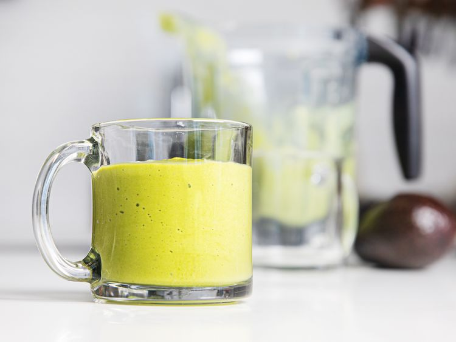

Home
Avocado Smoothie

This delicious green smoothie is both healthy and filling - perfect for an
in-between meal snack!
Ingredients
- 1 1/2 cups (355 ml) orange juice
- 1 ripe medium Hass avocado (about 6 ounces; 170 g)
- 1 1/2 cups frozen mango (about 8 ounces; 227 g)
- 1 large ripe banana (about 6 ounces; 170 g)
- 1 packed cup (40 g) baby spinach, washed well of any sand or grit
Directions
-
Combine orange juice, avocado, frozen mango, banana, and spinach in a
blender.
-
Pulse a few times to break up the fruit, then blend on high until
completely smooth, about 1 minute.